2021가천대학교 이전
[29] Ambipolar conduction and multicolor photosensing behaviors from poly (9, 9-di-n-octylfluorenyl-2, 7-diyl)-molybdenum disulfide heterointerfaces, Surfaces and Interfaces, 12월 (2021)
Dong Hyun Lee, Hyung Joong Yun, Seongin Hong (Corresponding), Hocheon Yoo
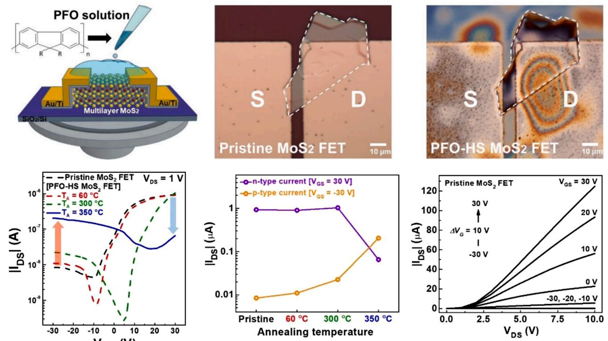
[28] High photoresponsivity of multilayer MoSe2 phototransistors decorated with Au nanoseeds, Applied Physics Letters, 9월 (2021)
Seongin Hong, Seungho Baek, Sunkook Kim
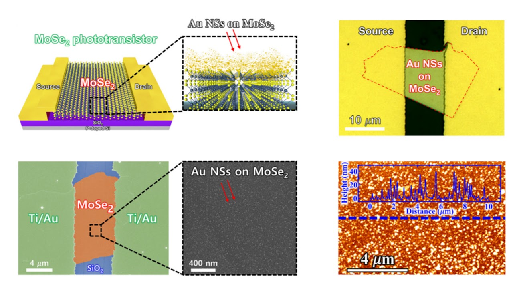
Seongin Hong, Haewon Cho, Byung Ha Kang, Kyungho Park, Deji Akinwande, Hyun Jae Kim, Sunkook Kim
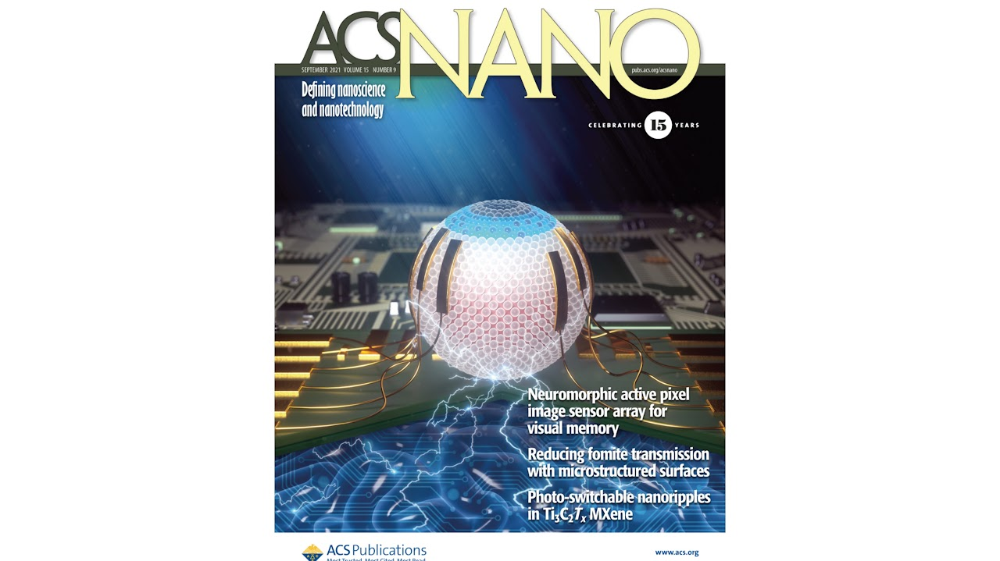
[26] Lopsided-Gating Leads to Multi-State and Photo-Switching Behaviors With Enhanced Photodetections, IEEE Sensors Journal, 8월 (2021)
Somi Kim, Hocheon Yoo, Seongin Hong
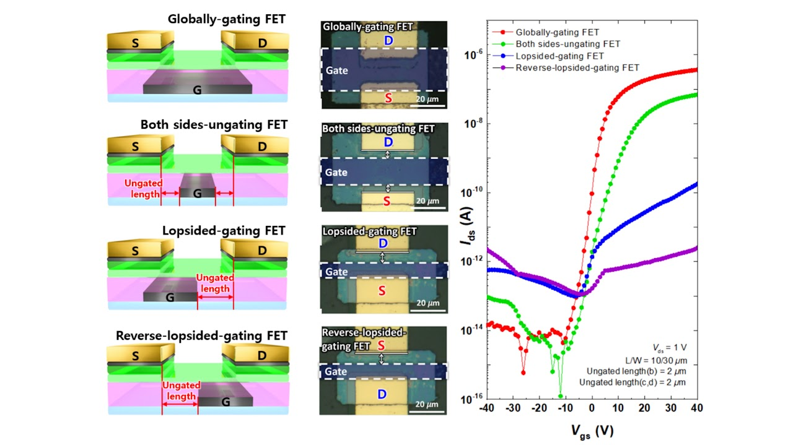
[25] (앞표지) Sub-Thermionic Negative Capacitance Field Effect Transistors with Solution Combustion-Derived Hf0.5Zr0.5O2, Advanced Functional Materials, 7월 (2021)
Pavan Pujar, Haewon Cho, Srinivas Gandla, Muhammad Naqi, Seongin Hong, Sunkook Kim
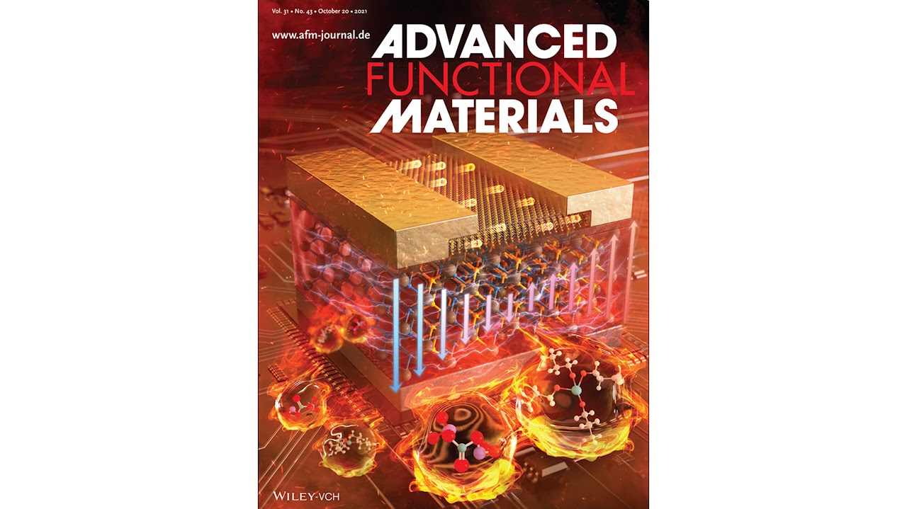
[24] Robust molybdenum diselenide ambipolar transistors with fluoropolymer interfacial layer and their application to complementary inverter circuits, Journal of Alloys and Compounds, 7월 (2021)
Seongin Hong, Hocheon Yoo
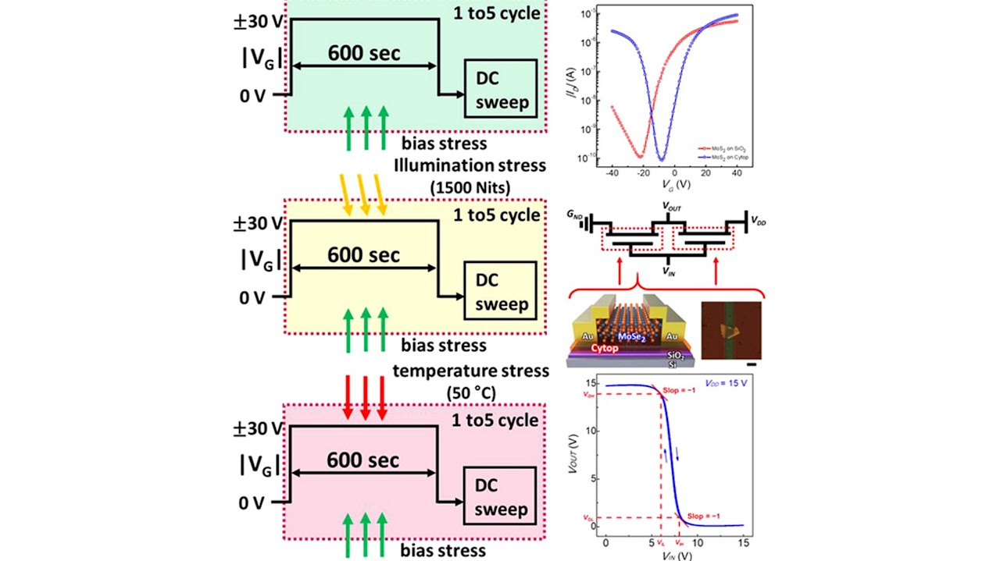
[23] Highly sensitive active pixel image sensor array driven by large-area bilayer MoS2 transistor circuitry, Nature Communications, 6월 (2021)
Seongin Hong, Nicolò Zagni, Sooho Choo, Na Liu, Seungho Baek, Arindam Bala, Hocheon Yoo, Byung Ha Kang, Hyun Jae Kim, Hyung Joong Yun, Muhammad Ashraful Alam, Sunkook Kim
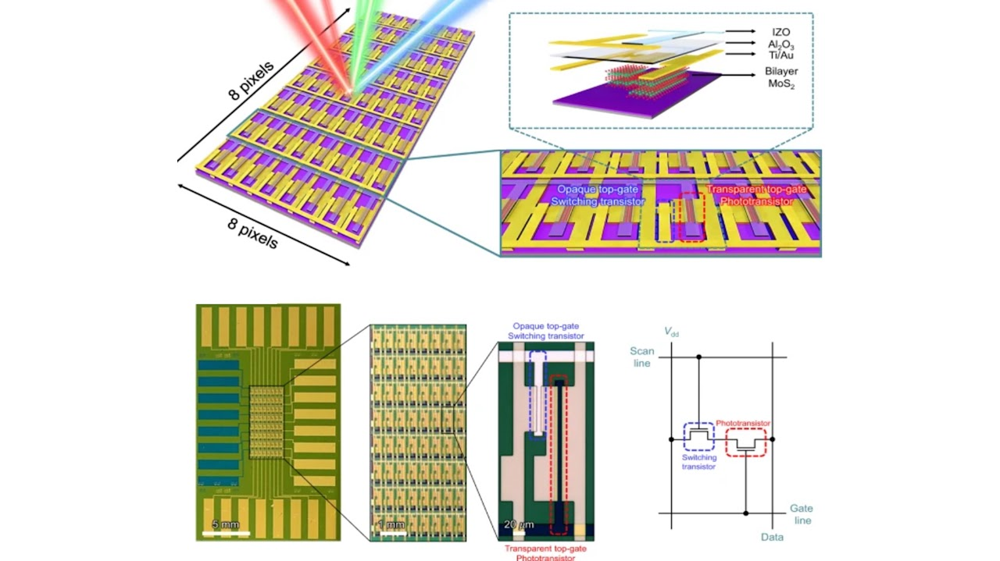
[22] Location-dependent multi-parameter detection behaviors using hetero-interfaced organic anti-ambipolar phototransistors, Sensors and Actuators A: Physical, 6월 (2021)
Seongjae Kim, Seongin Hong (Corresponding), Hocheon Yoo
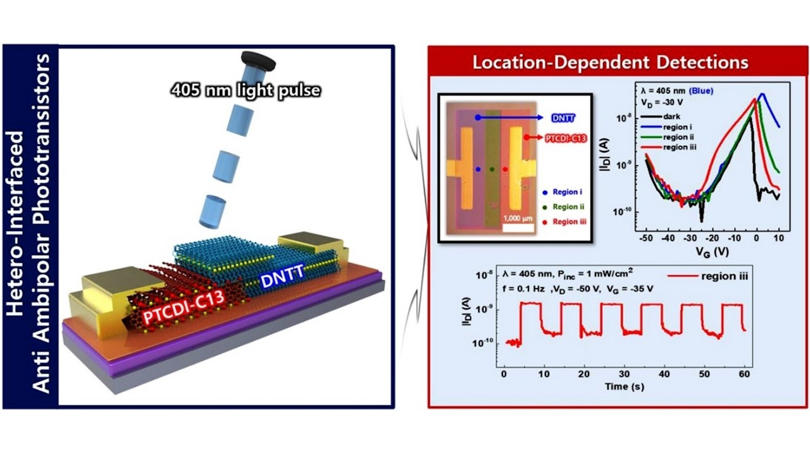
[21] Multifunctional molybdenum disulfide flash memory using a PEDOT: PSS floating gate, NPG Asia Materials, 4월 (2021)
Seongin Hong, Junwoo Park, Jung Joon Lee, Sunjong Lee, Kyungho Yun, Hocheon Yoo, Sunkook Kim
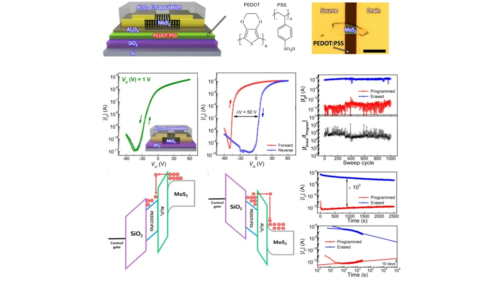
[20] Direct growth of orthorhombic Hf0.5Zr0.5O2 thin films for hysteresis-free MoS2 negative capacitance field-effect transistors, npj 2D Materials and Applications, 4월 (2021)
Hae Won Cho, Pavan Pujar, Minsu Choi, Seunghun Kang, Seongin Hong, Junwoo Park, Seungho Baek, Yunseok Kim, Jaichan Lee, Sunkook Kim
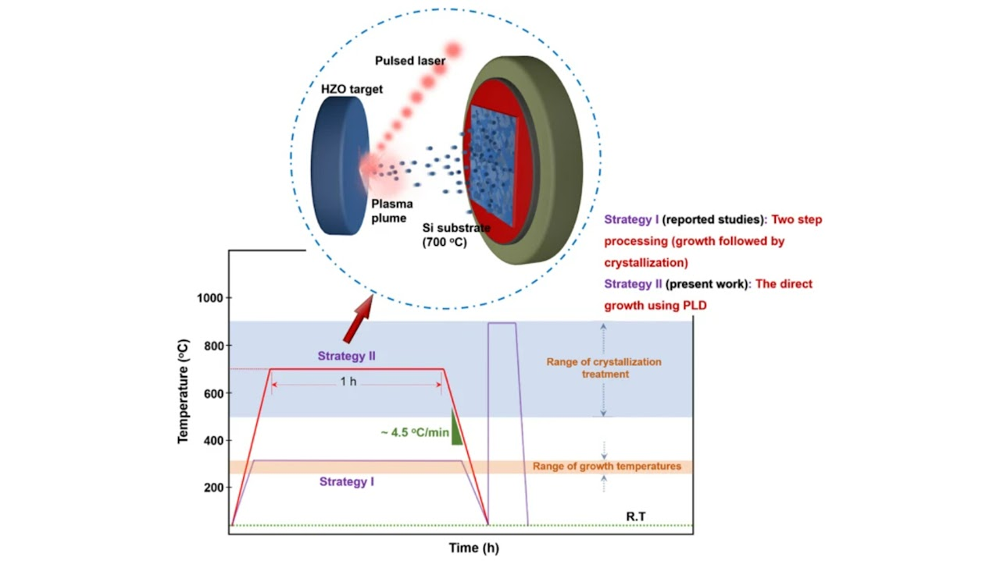
[19] Interfacial Doping Effects in Fluoropolymer-Tungsten Diselenide Composites Providing High-Performance P-Type Transistors, Polymers, 3월 (2021)
Hyeonji Lee, Seongin Hong (Corresponding), Hocheon Yoo
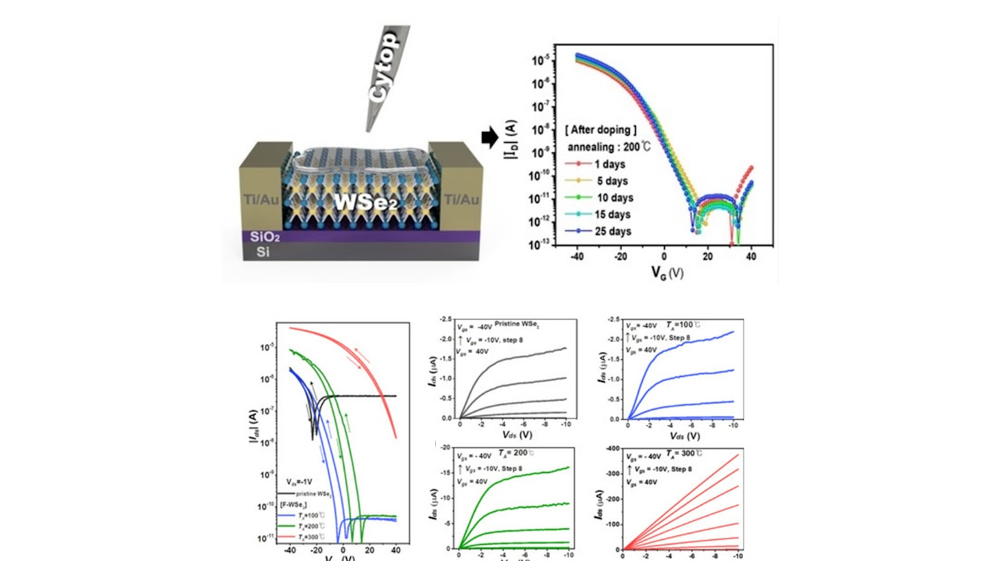